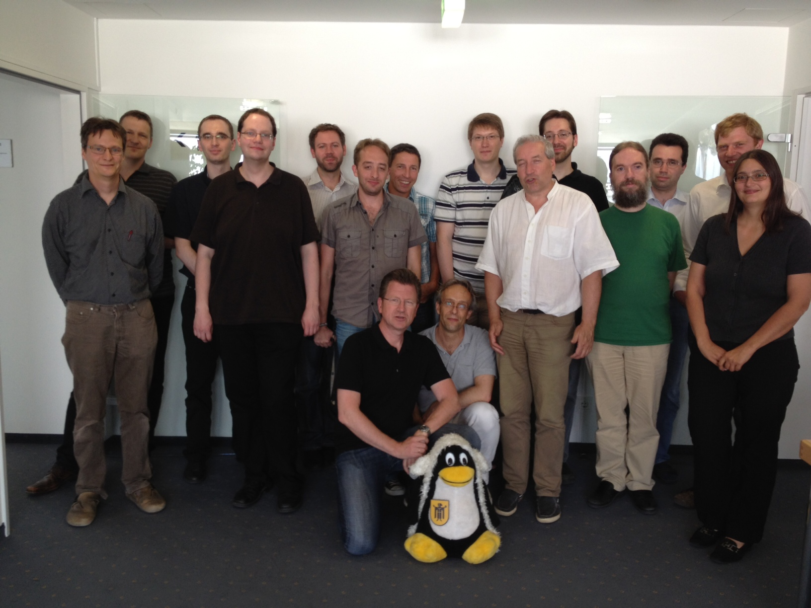

Ort
LiMux Projekt
Sonnenstraße 25
80331 München
Vielen Dank an das Limux Projekt und seinem Team für die Unterstützung!!!
Termin
06.07.2012 13:45 - 19:30
Veranstalter
Freies Office Deutschland e.V. (http://www.frodev.org)
Ansprechpartner/ Organisation
Harald Kagerer (h.kagerer@frodev.org)
Teilnehmer
 Teilnehmerliste
Ziel
Das halbtägige Arbeitstreffen bietet den am WollMux Projekt Interessierten Raum zur Klärung von offenen Fragen. Ziel ist es im Besonderen gemeinsam Grundlagen und Leitlinien für die weitere Fortentwicklung der Community und des Projekts zu finden.
Verlauf
Block 1: WollMux in der Praxis
Eröffnung
Grußworte
- Limux Projektleiter Peter Hofmann (Landeshauptstadt München)
- Vorsitzender des Freien Office Deutschland e.V. Thomas Krumbein
Vorstellungsrunde und Erfahrungsaustausch
Die TeilnehmerInnen kommen aus den Bereichen:
- Anwendung
- Entwicklung
- Beratung
- Marketing
- Management
- OpenSource Community Förderung
WollMux-Seriendruck
Vortrag/ Diskussion
Christoph Lutz (CIB) gibt in einem Vortrag einen Überblick über den Ad Hoc Seriendruck in MS-Office und Libre Office (Nativ und mit WollMux Unterstützung).
Danach geht er auf die Details der aktuellen WollMux Seriendruckimplementierung und ihren Problemen ein.
Besonders problematisch beim “OOo Based Mail Merge Ansatz”:
- Ausführung atomar --> kann nicht abgebrochen werden
- Ein-/Ausblendungen eines WollMux-Formulars funktionieren nicht
- Deutliche Performance-Probleme bei Datensatzanzahlen > 500
Bei Druck in PDF Gesamtdokument:
- Abstürze durch Memory Leak in OOo (Bug Patch bekannt und in LibO integriert)
- Keine “Nächste Datensatz” Funktion
Ein möglicher, viel versprechender Lösungsansatz für den Seriendruck könnte die Integration von Third Party Modulen der CIB sein. Der vorgestellte Prototyp beeindruckt durch seine hohe Performance.
Die Diskussion ergibt:
- Die beim CIB Modul nötige Konvertierung von ODF nach RTF im Workflow könnte ein Risiko sein.
- Die Verwendung auch proprietärer Ergänzungen in WollMux-Anwendungsszenarien ist sinnvoll und ist zur Verbreitung des WollMux im professionellen Umfeld gerechtfertigt.
- Eine (als Open Source implementierte) Schnittstelle (API) im WollMux für proprietäre Module zu implementieren wird begrüsst.
- Diese API kann auch sehr gewinnbringend bei der Landeshauptstadt München (LHM) für Fachanwendungen genutzt werden.
ToDo - Nächste Schritte
- Andor Ertsey [LHM] und Christoph Lutz [CIB] nehmen miteinander Kontakt zur weiteren Planung/Abstimmung dieser API auf.
Liste “Most Annoying WollMux-Issues” und Lösungsansätze
Unter http://code.google.com/p/wollmux/issues/list ist aktuell der Issuetracker des WollMux erreichbar.
Die dort erfassten Issues werden bisher eher informell und unstrukturiert bearbeitet. Um hier Änderungen zur erreichen ist es nötig, neben der Definition und der Organisation von Bearbeitungsverfahren, Schritte umzusetzen, die es ermöglichen, dass es für Entwickler interessant wird Incidents und Featurerequests umzusetzen.
Block 2: Community/ Kommunikation
Marketing
Zielgruppenpotential
Als Zielgruppe für den WollMux sind aktuell Unternehmen und die öffentliche Verwaltung zu betrachten. Diese sollten durch geeignete Maßnahmen dazu motiviert werden, die Behebung kritischer Fehler und die Implementierung von neuen Features zu unterstützen. Durch eine Konfigurationsvereinfachung mit Reduktion auf einzelne, für OOo/LibO AnwenderInnen direkt attraktive Funktionalitäten könnte mit diesem “WollMux Light” die Zielgruppe auch auf eine breite Basis mit Privatanwendern ausgebaut werden, was als sehr wichtig zur Verbreiterung der Anwenderbasis betrachtet wird.
Namen und Logo
Rechtestatus auf den “Markennamen”
Unklar ist der Rechtestatus auf den Namen “WollMux”. Hier sollte Klarheit geschaffen werden. Das aktuelle Beispiel der Namensrechte bei OOo/LibO zeigt die Bedeutung, die hier Rechssicherheit gibt.
Vorschlag von Thomas Krumbein: Der Verein FrODeV übernimmt in seiner gemeinnützigen Eigenschaft die Markenrechte auf den Namen WollMux.
Änderung des Logos
Es besteht Einstimmigkeit, dass das bestehende Logo nicht beibehalten werden soll. Ein neuer Logoentwurf soll über einen vom FrODeV organisierten Logowettbewerb gefunden werden.
Änderung des Applikations/ Projektnamens
Folgende Optionen kommen in Betracht:
- Beibehalten von “WollMux” + eindeutige Funktionsbeschreibung + neues Logo
- Neuer Namen + Logo mit eindeutigen Funktionsbezug und größerer internationaler Kompatibilität
Ein Meinungsbild der TeilnehmerInnen ergibt:
Option 1: 9 Stimmen
Option 2: 6 Stimmen
Enthaltung: 3 Stimmen
ToDo/Nächste Schritte
- Prüfung des Namensrechtstatus für “WollMux” bei der LHM (Andor Ertsey [LHM])
- Organisation eines Logowettbewerbs (Harald Kagerer [FrODeV])
Community (Organisation)
Es wird folgende zukünftige Organisation für die WollMux Community vereinbart:
- Den WollMux und seine Community betreffenden Entscheidungen werden über die WollMux-Mailingliste (http://joinup.ec.europa.eu/mailman/listinfo/wollmux-general) öffentlich vorgeschlagen, diskutiert und nach einfacher Mehrheit abgestimmt.
- Stimmberechtigt sind alle Communitymitglieder mit dem Status WollMux-Committer. WollMux-Commiter kann jede Person werden, die unabhängig von der Art des Beitrags zur Verbesserung und Förderung des WollMux beiträgt.
- Den formalen Status des WollMux-Committer erlangt man, indem man sich auf der WollMux Mailingliste persönlich vorstellt und seinen geplanten Beitrag zur WollMux Community beschreibt.
- Im WollMux Wiki (http://www.wollmux.net/wiki/) wird eine Liste aller Committer geführt.
- Es gibt zwei Ansprechpersonen (je eine für den Bereich Technik und eine für den Bereich Organisation), die die WollMux Community nach außen hin vertreten, aber keine besonderen anderen Rechte gegenüber den anderen Committern haben.
- Für den Bereich Technik wird Daniel Benkmann und für den Bereich Organisation Harald Kagerer als erste Ansprechspersonen bestimmt.
- In beratender, moderierender und begleitender Funktion wird ein Community-Gremium angestrebt. Es soll aus einem Vertreter/ einer Vertreterin der Community (Ansprechsperson), der Landeshauptstadt München (LHM) und des Freien Office Deutschlands e.V. (FrODEV) bestehen.
Block 3: Prozesse und Verfahren
Zukünftiges Releasekonzept
- Unter http://www.wollmux.net/daily/?C=M;O=D werden “Daily Builds” zur Prüfung von neuen Features zur Verfügung gestellt.
- Release der LHM werden als besonders stabile und getestete Long Term Releases veröffentlicht.
- WollMux-Community Releases werden nach Abstimmung durch die WollMux-Commiter featuregesteuert zur Verfügung gestellt.
Qualitätssicherung für WollMux Community Releases
Als Basis für die Qualitätssicherung der WollMux Community Releases wird angestrebt, eine Community getragene Testkonzeption zu planen und umzusetzen. Vorschläge werden von Harald Kagerer vorbereitet.
Repository
Das bestehende Repository soll von Mercurial auf GIT umgestellt werden. Diese Umstellung erfolgt durch Mitarbeiter der Landeshauptstadt München.